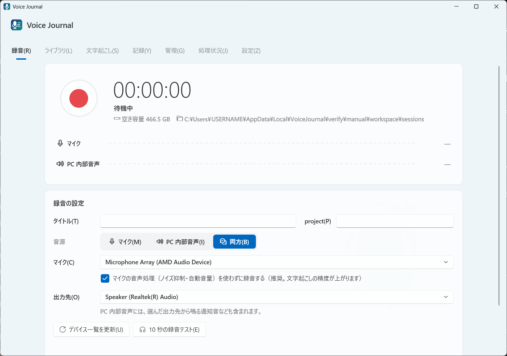
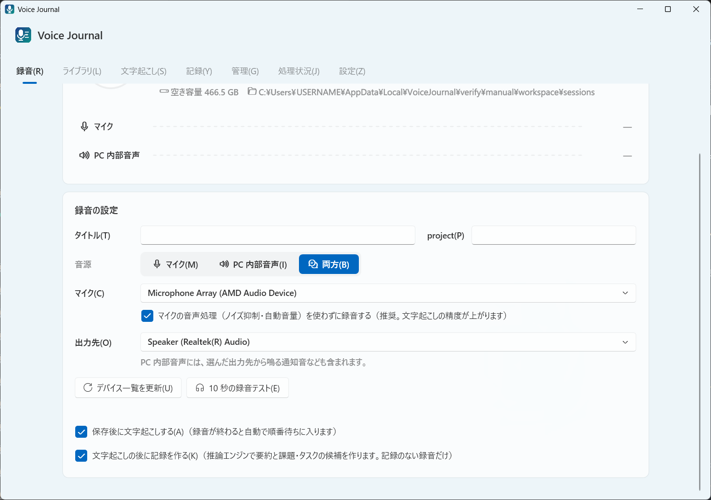
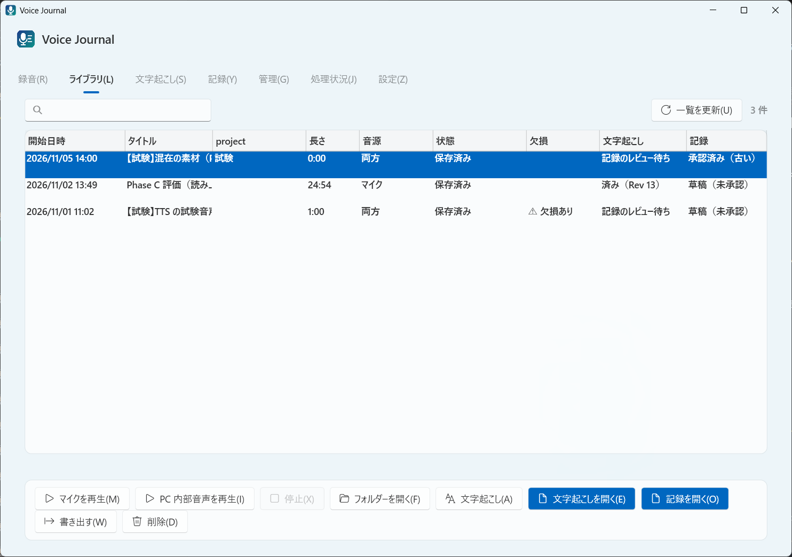
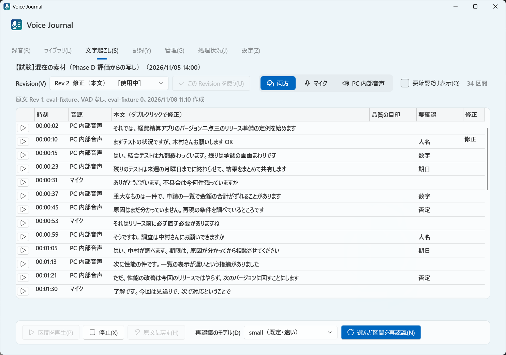
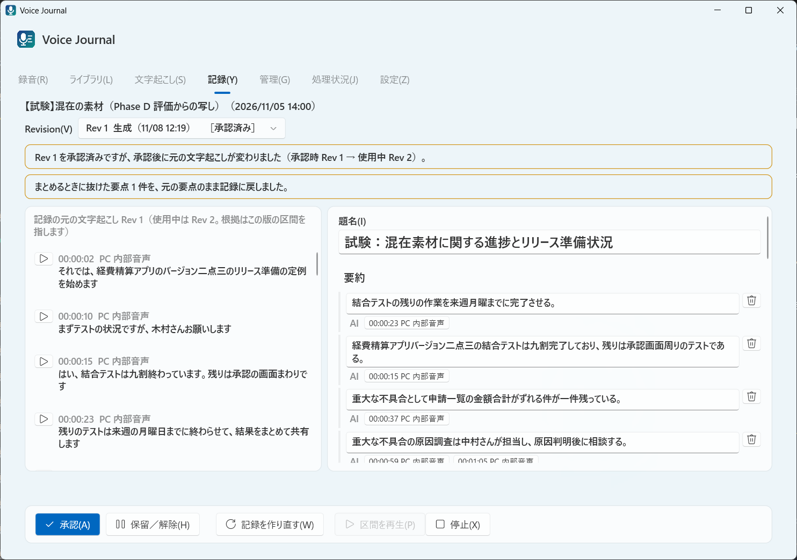
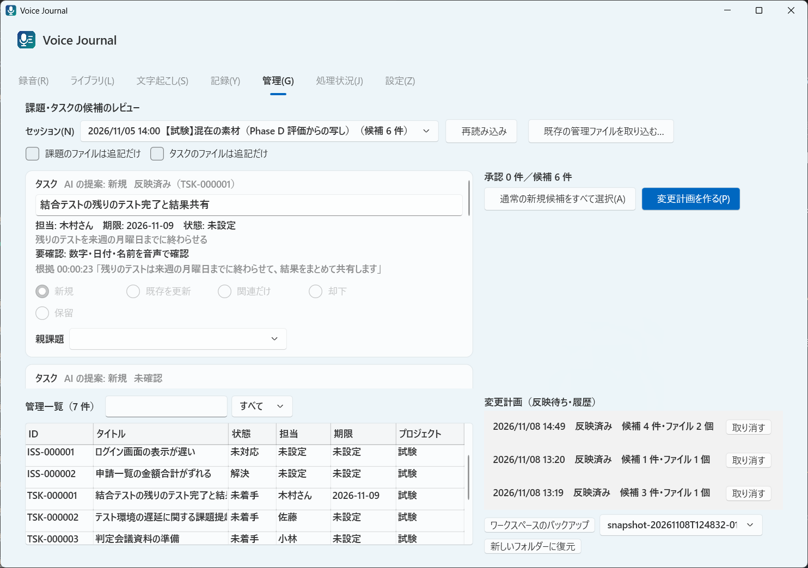
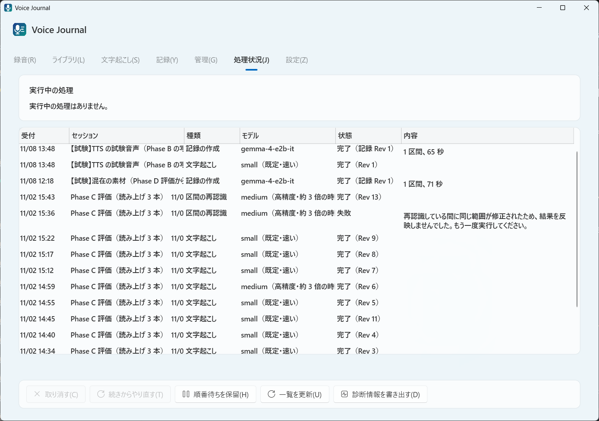
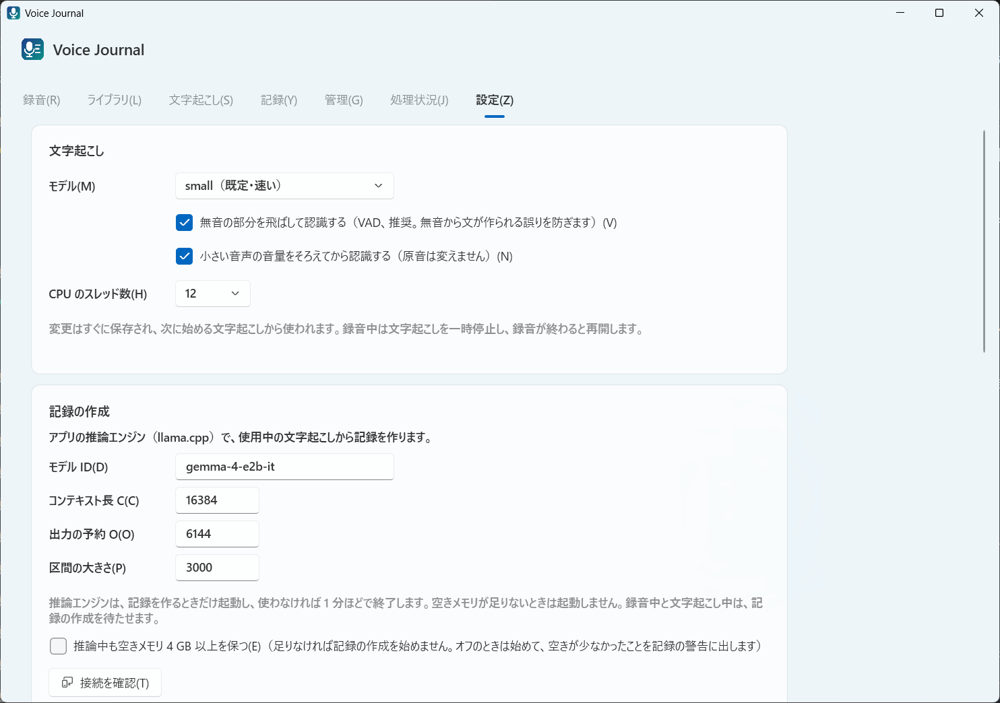
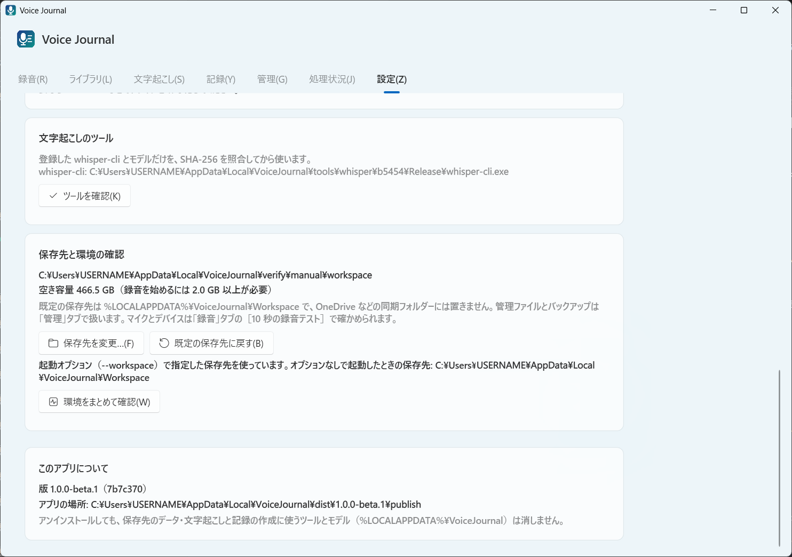

録音した声を、この PC の中だけで文字起こしし、要約と課題・タスクの候補を作るアプリです。候補は、確かめて承認したものだけが管理ファイルに書き込まれます。
この説明書の画面の写真は、試験用のデータで撮ったものです。人名や内容は試験用の会議の読み上げ原稿のものです。
issues.md と tasks.md）に書き込みます。書き込む前に差分を見せ、元の内容をバックアップします。反映した後でも取り消せます。インターネットには接続しません。録音・文字起こし・記録の作成は、すべてこの PC の中で行います。外部への送信や自動更新はありません。
自動はアプリが続けて行うこと、操作は利用者が押すことです。
録音中は、文字起こしと記録の作成を自動で一時停止します（録音の音を途切れさせないため）。録音が終わると続きから再開します。
| もの | 場所 |
|---|---|
| アプリ本体 | %LOCALAPPDATA%\Programs\VoiceJournal |
| 録音・文字起こし・記録・管理ファイル（ワークスペース） | %LOCALAPPDATA%\VoiceJournal\Workspace（設定タブで変えられます） |
| 文字起こしと記録の作成に使うツール・モデル・設定 | %LOCALAPPDATA%\VoiceJournal の tools・models・config |
データは OneDrive などの同期フォルダーには置きません。録音や文字起こしは暗号化せずに保存するので、必要なら BitLocker などでドライブを暗号化してください。
VoiceJournal-1.0.0-beta.2-x64.msi をダブルクリックします。管理者権限は要りません（自分のユーザーだけに入ります）。文字起こしと記録の作成には、別に用意するツールとモデルが要ります。
whisper.cpp（文字起こし）、llama.cpp（記録の作成）とそのモデルは、インストーラーには入っていません。%LOCALAPPDATA%\VoiceJournal の tools・models に置き、config に SHA-256 を登録しておく必要があります。開発に使った PC では用意済みです。別の PC に入れるときは、環境構築の手順書に従って先に用意してください。ツールがなくても録音はできます。
アプリを閉じてから、新しい MSI をダブルクリックします。古い版は自動で置き換わります（同じ版番号の新しいビルドでも置き換わります）。データはそのまま使えます。
設定タブの一番下「このアプリについて」に、版（例: 1.0.0-beta.2（7b7c370））とアプリの場所が出ます。かっこの中は、ビルドした元のソースの識別子です。不具合を伝えるときは、この版を添えてください。
Windows の［設定］→［アプリ］→［インストールされているアプリ］で「Voice Journal」を選び、［アンインストール］を押します。消えるのはアプリ本体とスタートメニューの項目だけです。録音・文字起こし・記録・管理ファイル、ツールとモデル（%LOCALAPPDATA%\VoiceJournal）は消しません。不要なら、このフォルダーを手で削除してください。
ウィンドウの上部に 7 つのタブがあります。Alt とかっこの中の文字を押すと、そのタブに移ります。
| タブ | すること |
|---|---|
| 録音 (R) | 録音の開始と停止、音源とデバイスの選択、録音テスト |
| ライブラリ (L) | 録音の一覧と検索、再生、文字起こしのやり直し、書き出し、削除 |
| 文字起こし (S) | 文字起こしの確認と修正、区間の再認識、版（Revision）の切り替え |
| 記録 (Y) | 要約・章・課題とタスクの候補の確認、編集、承認 |
| 管理 (G) | 課題・タスクの候補のレビュー、管理ファイルへの反映と取り消し、管理一覧、バックアップと復元 |
| 処理状況 (J) | 文字起こしと記録の作成の進み具合、取り消しとやり直し、診断情報の書き出し |
| 設定 (Z) | 文字起こしと記録の作成の設定、ツールの確認、保存先、版の表示 |
録音中は、ウィンドウの右上に「● 録音中 00:12:34」のような表示が出ます（準備中・一部停止・保存中も同じ場所に出ます）。
Windows のライト／ダークの設定に合わせて色が変わります。Windows の「テキストのサイズ」を大きくすると、アプリの文字も大きくなります。


| 項目 | 説明 |
|---|---|
| タイトル (T)・project (P) | あとでライブラリで探すときの名前です。空でも録音できます（一覧では「（無題）」）。 |
| 音源 | マイク: 自分の声だけ。PC 内部音声: PC で鳴っている音だけ（オンライン会議の相手の声、動画など）。両方（既定）: 2 つを別々のファイルに録ります。文字起こしでも、どちらの声かを区別して表示します。 |
| マイク (C) | 使うマイク。前に選んだものが無ければ、Windows の既定のマイクを選びます。 |
| マイクの音声処理を使わずに録音する | 既定はオン（推奨）。ノイズ抑制や自動音量を通さない原音を保存するので、文字起こしの精度が上がります。マイクが対応していないと録音を始められないので、そのときはチェックを外します。 |
| 出力先 (O) | PC 内部音声として録る、音の出口（スピーカーやヘッドホン）。選んだ出力先から鳴る通知音なども録音に入ります。 |
| 保存後に文字起こしする (A) | 既定はオン。録音が終わると自動で文字起こしの順番待ちに入ります。 |
| 文字起こしの後に記録を作る (K) | 既定はオン。文字起こしが終わると、自動で記録と候補を作ります（まだ記録を作ったことのない録音だけ）。 |
デバイスを抜き差ししたときは、一覧に自動で反映します。反映されないときは デバイス一覧を更新(U) を押します。2 つのチェックの状態は保存され、次回の起動でも同じです。
10 秒の録音テスト(E) を押すと、選んだ音源とデバイスで 10 秒間だけ音を受け取り、音が届いたか・音量はどうかを表示します。保存はしません。マイクなら話しかけ、PC 内部音声なら動画などを再生しながら試します。
| 結果の例 | 意味と対処 |
|---|---|
| ✓ 音が届きました | 問題ありません。 |
| ⚠ ほぼ無音でした | マイクのミュート、Windows の入力音量、選んだマイクが正しいかを確かめます。 |
| ⚠ 音が大きすぎて割れています | Windows の入力音量を下げます。 |
| ⚠ PC の音が届きませんでした | PC で音が鳴っていない間は届きません。動画などを再生しながらもう一度試します。 |
保存先の空き容量が足りないと、録音を始められません（FS-001）。録音中は PC がスリープしないようにします。
録音中にウィンドウを最小化すると出る、小さなバーです。常に手前に表示され、ほかのアプリの操作を邪魔しません。
録音中に問題が起きると、録音タブの「お知らせ」に出ます。
| お知らせ | アプリの動きと対処 |
|---|---|
| マイクなどが切断された（CAP-002） | ほかの音源は録音を続けます。接続し直したら 再接続(N) を押すと、そこから録音を続けます。切断中の音声は欠損として記録されます。 |
| マイクの音が 10 秒間届いていない | 録音は続いています。ミュートやマイクの接続を確かめます（1 回の録音で 1 度だけ出ます）。 |
| 書き込みが追いつかず音声の一部が欠けた（CAP-003）・保存のエラー | 安全のため録音を止め、それまでの音声を保存します。 |
| 空き容量が不足した（FS-001） | 録音を止めて保存します。音声は自動では削除しません。 |

| 列 | 表示 |
|---|---|
| 状態 | 録音の状態。保存済み・録音中・中断（回復済み）・失敗 など |
| 欠損 | ⚠ 欠損あり（切断などで音声が欠けた）、⚠ 末尾に欠損の可能性（中断から回復した録音） |
| 文字起こし | 未処理 → 順番待ち → 音声を変換中 → 文字起こし中 → 文字起こし済み（済み（Rev n））。記録を作る段階では 記録を作成中 → 記録を検証中 → 記録のレビュー待ち。ほかに 失敗・取り消し・記録にする内容なし |
| 記録 | 記録なし／草稿（未承認）／保留／承認済み／承認済み（古い）（承認した後に文字起こしや記録が変わった） |
上の検索欄（Alt+K）に入力すると、タイトル・project・日付と、文字起こしの本文から探して絞り込みます。右に件数（例: 3 / 12 件）が出ます。
| ボタン | すること |
|---|---|
| マイクを再生(M) PC 内部音声を再生(I) | その音源の原音を最初から再生します。停止(X) で止めます。 |
| フォルダーを開く(F) | 録音のフォルダーをエクスプローラーで開きます。 |
| 文字起こし(A) | 今の設定で文字起こしをします。すでに文字起こし済みなら、以前の結果を残したまま新しい原文を作ります（モデルを変えて試すときなど）。 |
| 文字起こしを開く(E) | 文字起こしタブで開きます。行のダブルクリックでも開きます。 |
| 記録を開く(O) | 記録タブで開きます。記録がまだ無ければ、そこで作れます。 |
| 書き出す(W) | 選んだフォルダーの中に「日時 タイトル」のフォルダーを作り、記録（record.md。未承認なら record.draft.md）と文字起こし（transcript.md）を Markdown でコピーします。原音は書き出しません。同じ名前のフォルダーがあれば上書きせずに止まります。 |
| 削除(D) | 消えるもの（原音・文字起こし・記録・候補・検索の索引）と、残るもの（このセッションを根拠にした管理ファイルの項目、バックアップの写し）を一覧で見せてから、確認します（既定は［いいえ］）。すぐには消さず、ワークスペースの trash フォルダーへ移します。フォルダーを戻せば元に戻ります。録音中の録音は削除できません。 |

文字起こしは書き換えず、直すたびに新しい版（Rev 1、Rev 2…）を作ります。元の原文はいつでも残っています。
| 列 | 意味 |
|---|---|
| ▶ | その区間を再生します。 |
| 音源 | マイク／PC 内部音声。上の切り替え（両方・マイク・PC 内部音声）で、片方だけ表示できます。 |
| 品質の目印 | 無音・反復・短い・境界・欠損。認識が怪しい区間の目安です。回り込みは、スピーカーから出た相手の声をマイクが拾った区間です（同じ時刻の PC 内部音声に同じ言葉があるもの）。文は消さずに残しますが、記録の作成には使わず、「要確認だけ表示」にも出しません。ヘッドホンで会議に出ると、回り込み自体が減ります。 |
| 要確認 | 数字・期日・否定・人名を含む区間。聞き間違えると意味が変わりやすいので、音声で確かめることをおすすめします。「要確認だけ表示 (Q)」で絞り込めます。 |
| 修正 | 手で直した区間に「修正」と出ます。 |
直せるのは使用中の版だけです。「認識されなかった範囲（STT-003）」が出ている場合、その時間は文字になっていません。

通常は文字起こしの後に自動で作られます。自動で作らなかったとき、または作り直すときは、記録を作る(W)（記録があるときは 記録を作り直す(W)）を押します。今の記録は前の版として残ります。
承認(A) を押すと、最新の版を承認し、録音のフォルダーの record.md に保存します。保留／解除(H) で保留にもできます。
記録を承認しても、課題・タスクの候補は承認されません。管理ファイルにも書き込みません。候補は 課題・タスクのレビューへ(T)（記録の下のほか）から管理タブで確かめます。

課題は Workspace\management\issues.md、タスクは tasks.md です。アプリが ID（ISS-000001、TSK-000001…）を付けて、vj:item の囲みの中に書きます。囲みの外には自由にメモを書けます（アプリは書き換えません）。
| 選択肢 | 意味 |
|---|---|
| 新規 | 新しい項目として追加します。 |
| 既存を更新 | 「対象の既存項目」で選んだ項目の状態・担当・期限などを更新します。 |
| 関連だけ | 既存の項目に、この録音を根拠として結び付けるだけです。 |
| 却下・保留 | 計画に入れません。 |
通常の新規候補をすべて選択(A) は、AI が新規と提案し、要確認の印のない候補だけを「新規」にします。気をつけるべき候補は 1 件ずつ選びます。選んだ内容はすぐ保存されます。
「似た既存の項目: …」と出たときは、同じものなら「既存を更新」か「関連だけ」を選びます。タイトルが似ていても、アプリが自動でまとめることはありません。
候補の選択を変えると、作った計画は消えます（作り直します）。反映の前に管理ファイルが外で編集されていたときは、反映を中止し、外の編集はそのまま残します。
右下「変更計画（反映待ち・履歴）」の反映済みの行で 取り消す を押すと、元に戻す計画を作ります。差分を確かめて［選択した変更を反映］を押すと戻ります。新しく作った項目は削除せず、取消（クローズ）にします。
| 履歴の状態 | 押せるボタン |
|---|---|
| 反映待ち | ［反映］［破棄］ |
| 反映済み | ［取り消す］ |
| 復旧が必要 | ［もう一度確かめる］［破棄］。反映の途中でアプリが止まったときなどに出ます。起動時にも自動で確かめて続きを処理します。 |
反映前のバックアップは、既定で 90 日残します（直近 10 回は期限なしで残します）。日数は設定タブで変えられます。
管理タブの右下で操作します。週に 1 回ほど、ワークスペース全体のバックアップを作ることをおすすめします。
Workspace\backups\snapshot-… です。バックアップはワークスペースの中に作られるので、ドライブの故障には備えられません。大切なデータは、backups の中のフォルダーを別のドライブにもコピーしてください。
Workspace-restored-日時 を作って中身を検査します。VoiceJournal.App.exe --workspace "…"）で起動すると、復元したほうを開けます。
| ボタン | すること |
|---|---|
| 取り消す(C) | 順番待ちか実行中の処理を止めます。終わった区間と録音は残ります。 |
| 続きからやり直す(T) | 失敗・取り消しの処理を順番待ちに戻します。終わった区間はそのまま使い、残りだけを実行します。 |
| 順番待ちを保留(H) | 順番待ちの処理を始めずに待たせます（PC を重くしたくないときなど）。実行中の処理は最後まで続けます。［保留を解除］で再開します。アプリを起動し直しても解けます。 |
| 診断情報を書き出す(D) | 不具合を調べるための情報を %LOCALAPPDATA%\VoiceJournal\logs に JSON で保存します。含めるもの・含めないものを見せてから確認します。原音や文字起こし・記録の本文、タイトルは含めません。どこにも送信しません。 |

| 項目 | 説明 |
|---|---|
| モデル (M) | medium（既定・高精度）か small（速い・固有名詞に弱い）。会議の記録には medium を使ってください。small は時間が半分以下ですが、人の名前や専門の言葉を取り違えやすく、同じ言葉を繰り返して発言を落とすこともあります。1 時間の会議（マイクと PC 内部音声の両方）の文字起こしは、medium で約 40 分かかります。 |
| 無音の部分を飛ばして認識する（VAD） | 推奨（オン）。無音から文が作られる誤りを防ぎます。 |
| 小さい音声の音量をそろえてから認識する | 認識用の写しだけ音量をそろえます。原音は変えません。 |
| CPU のスレッド数 (H) | 文字起こしに使う CPU の数。 |
順番待ちに入っている処理は、入れたときの設定のままです。
| 項目 | 説明 |
|---|---|
| モデル ID・コンテキスト長・出力の予約・区間の大きさ | 推論エンジンの設定です。通常は変えません。使えない値は直して保存します（コンテキスト長は 4096 以上、出力の予約はその半分以下、区間は 500〜32768）。 |
| 推論中も空きメモリ 4 GB 以上を保つ (E) | 既定はオフ。オンにすると、空きメモリが足りないときは記録の作成を始めません。オフのときは始めて、空きが少なかったことを記録の警告に出します。 |
| 接続を確認(T) | 推論エンジンを実際に起動して確かめます。記録の作成が失敗する（LLM-001）ときに使います。 |

管理ファイルの場所と、反映前のバックアップを残す日数 (Q)（7〜3650 日、既定 90 日）を設定します。
ツールを確認(K) で、whisper-cli と登録済みのモデルの SHA-256 を照合します（数秒かかります）。アプリは登録したファイルだけを、照合してから使います。
%LOCALAPPDATA%\VoiceJournal\Workspace に戻します。版とアプリの場所を表示します。
| 表示・症状 | 原因と対処 |
|---|---|
| 録音を開始できません（マイクへのアクセス、CAP-001） | Windows の［設定］→［プライバシーとセキュリティ］→［マイク］で、「マイクへのアクセス」と「デスクトップ アプリがマイクにアクセスできるようにする」をオンにします。 |
| このマイクは「音声処理を使わない録音（raw）」に対応していません | 録音タブの「マイクの音声処理（…）を使わずに録音する」のチェックを外します。 |
| ほかのアプリがこのデバイスを専有しています（CAP-002） | そのデバイスを使っているアプリを閉じるか、別のデバイスを選びます。 |
| 選択したデバイスが見つかりません | 接続を確かめてから デバイス一覧を更新(U) を押します。 |
| 空き容量が足りない（FS-001） | 不要なファイルを整理します。録音済みの音声は自動では削除しません。 |
| STT-001: whisper-cli またはモデルが見つからない・SHA-256 が一致しない | 設定タブの［ツールを確認］で確かめます。ツールとモデルを置き直し、登録をやり直します。録音は残っています。 |
| STT-002: 文字起こしが異常終了した／時間内に終わらなかった／空きメモリが足りない | ほかのアプリを閉じてから、処理状況タブの［続きからやり直す］を押します。終わった区間は残っています。 |
| LLM-001: 推論エンジンを使えませんでした | 空きメモリが足りないか、ファイルが登録と違います。ほかのアプリ（エミュレーターや Docker など、メモリを多く使うもの）を閉じ、設定タブの［接続を確認］で原因を確かめてから［続きからやり直す］を押します。文字起こしは残っています。 |
| LLM-002／003: 記録を作れませんでした | ［続きからやり直す］で、残りの区間だけを実行します。 |
| 文字起こしに記録にする内容がありませんでした | 無音や認識なしの録音です。記録は作られません。 |
| 再認識している間に同じ範囲が修正されたため、結果を反映しませんでした | もう一度、再認識を実行します。 |
| 管理ファイルが承認の後に変更されています（外部での編集） | 反映を中止し、外の編集はそのまま残しています。最新の内容で計画を作り直します。 |
| 管理ファイルに書き込めませんでした | エディターなどほかのアプリで開いていないか確かめます。何も変更していません。 |
| Voice Journal はすでに起動しています | 同じ保存先では 1 つしか起動できません。タスクバーのアプリを探します。 |
| 前回の録音を回復しました | アプリが落ちた録音を回復しました。ライブラリに「中断（回復済み）」と出ます。元のファイルは残っています。 |
| 保存先またはデータベースを開けませんでした | 設定で選んだ保存先が使えないときは、既定に戻すかを聞きます。録音済みのファイルは変更していません。 |
| 文字起こしや記録の作成が進まない | 録音中は一時停止します。処理状況タブで「保留」になっていないかも確かめます。 |
原因がわからないときは、処理状況タブの 診断情報を書き出す(D) で情報を保存し、設定タブの版と一緒に伝えてください。
丸い録音ボタン、ミニバーのボタン、記録の章と文の小さなアイコンボタン、管理タブの一部のボタンには、Alt の文字がありません。Tab で移動して Space で押します。
| 場所 | 中身 |
|---|---|
%LOCALAPPDATA%\Programs\VoiceJournal | アプリ本体（アンインストールで消えます）。第三者のライセンス一覧 third-party-notices.md もここにあります。 |
%LOCALAPPDATA%\VoiceJournal\Workspace | ワークスペース（既定の保存先） |
sessions\年\月\<ID>\ | 録音ごとのフォルダー。audio\（原音）、transcripts\（文字起こしの各版）、records\（記録の各版）、承認した記録 record.md（未承認なら record.draft.md）、文字起こし transcript.md |
management\issues.md・tasks.md | 管理ファイル |
transactions\ | 変更計画と、反映前のバックアップ |
backups\ | ワークスペースのバックアップ |
imports\ | 取り込んだ管理ファイルの写し |
trash\ | 削除した録音（ここから戻せます） |
db\ | 検索用の索引。録音や文字起こしのファイルから作り直せます。 |
%LOCALAPPDATA%\VoiceJournal\tools・models | whisper.cpp・llama.cpp とモデル |
%LOCALAPPDATA%\VoiceJournal\config | 設定と、ツール・モデルの登録（SHA-256） |
%LOCALAPPDATA%\VoiceJournal\logs | ログと診断情報 |
%LOCALAPPDATA% は、エクスプローラーのアドレス欄にそのまま入力すると開けます（通常は C:\Users\<ユーザー名>\AppData\Local）。